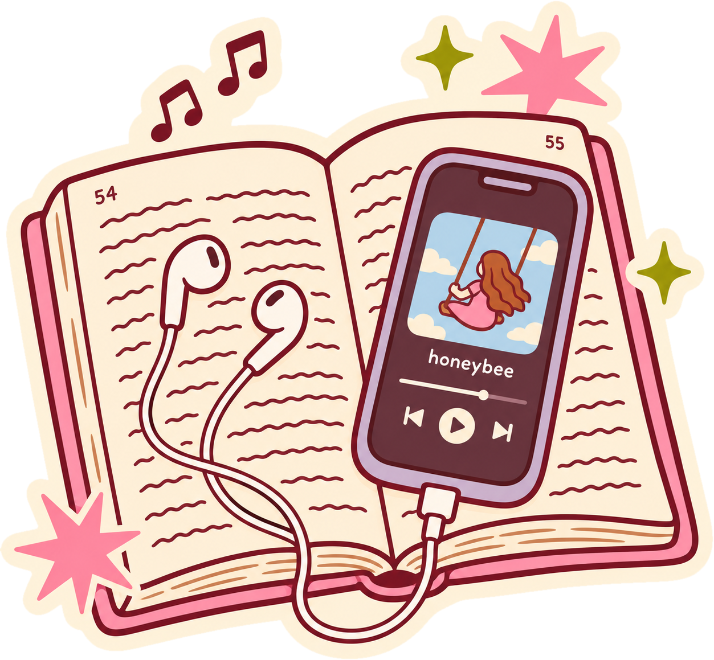

Minutos escuchados
32,450
La estrategia de marketing detrás de uno de los fenómenos digitales más populares.
Millones la esperan, la comparten y hablan de ella por su cuenta. Y eso no es casualidad.
Convirtió los datos de escucha en una experiencia personal que conecta con recuerdos, emociones y personalidad.

Cada publicación es exposición orgánica: sus usuarios no solo consumen Spotify, también lo promocionan.
UGC + marketing viral + brand engagementUna sola experiencia que impulsa visibilidad, adquisición y participación.
Fuentes: Spotify vía TechCrunch y Music Business Worldwide (dic. 2025) · WARC, Cannes Creative Effectiveness 2024.
A veces, la mejor estrategia no es promocionar tu producto: es crear una experiencia tan personal que la gente quiera compartirla.